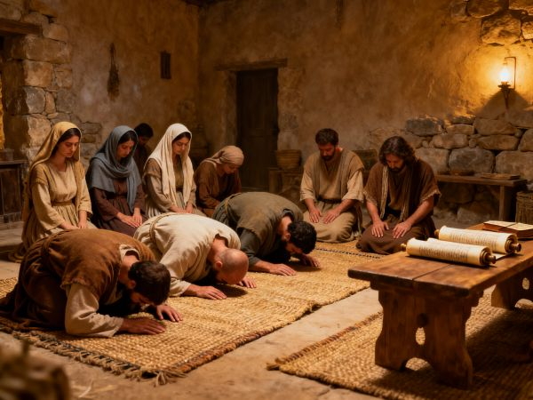

Verses on Worship
A collection of Scripture passages about the worship of God

Genesis 22:5
And Abraham said to his young men, “Stay here with the donkey; the lad and I will go yonder and worship, and we will come back to you.”
Exodus 24:1
Now He said to Moses, “Come up to the LORD, you and Aaron, Nadab and Abihu, and seventy of the elders of Israel, and worship from afar.
Exodus 34:14
“(for you shall worship no other god, for the LORD, whose name is Jealous, is a jealous God),
Deuteronomy 4:19
“And take heed, lest you lift your eyes to heaven, and when you see the sun, the moon, and the stars, all the host of heaven, you feel driven to worship them and serve them, which the LORD your God has given to all the peoples under the whole heaven as a heritage.
Deuteronomy 8:19
“Then it shall be, if you by any means forget the LORD your God, and follow other gods, and serve them and worship them, I testify against you this day that you shall surely perish.
Deuteronomy 11:16
“Take heed to yourselves, lest your heart be deceived, and you turn aside and serve other gods and worship them,
Deuteronomy 12:4
“You shall not worship the LORD your God with such things.
Deuteronomy 12:31
“You shall not worship the LORD your God in that way; for every abomination to the LORD which He hates they have done to their gods; for they burn even their sons and daughters in the fire to their gods.
Deuteronomy 26:10
‘and now, behold, I have brought the firstfruits of the land which you, O LORD, have given me.' Then you shall set it before the LORD your God, and worship before the LORD your God.
Deuteronomy 30:17
“But if your heart turns away so that you do not hear, and are drawn away, and worship other gods and serve them,
1 Samuel 1:3
This man went up from his city yearly to worship and sacrifice to the LORD of hosts in Shiloh. Also the two sons of Eli, Hophni and Phinehas, the priests of the LORD, were there.
1 Samuel 15:25
“Now therefore, please pardon my sin, and return with me, that I may worship the LORD.”
1 Samuel 15:30
Then he said, “I have sinned; yet honor me now, please, before the elders of my people and before Israel, and return with me, that I may worship the LORD your God.”
1 Kings 9:6
“But if you or your sons at all turn from following Me, and do not keep My commandments and My statutes which I have set before you, but go and serve other gods and worship them,
1 Kings 12:30
Now this thing became a sin, for the people went to worship before the one as far as Dan.
2 Kings 5:18
“Yet in this thing may the LORD pardon your servant: when my master goes into the temple of Rimmon to worship there, and he leans on my hand, and I bow down in the temple of Rimmon—when I bow down in the temple of Rimmon, may the LORD please pardon your servant in this thing.”
2 Kings 17:36
“but the LORD, who brought you up from the land of Egypt with great power and an outstretched arm, Him you shall fear, Him you shall worship, and to Him you shall offer sacrifice.
2 Kings 18:22
“But if you say to me, ‘We trust in the LORD our God,' is it not He whose high places and whose altars Hezekiah has taken away, and said to Judah and Jerusalem, ‘You shall worship before this altar in Jerusalem'?” '
1 Chronicles 16:29
Give to the LORD the glory due His name;
Bring an offering, and come before Him.
Oh, worship the LORD in the beauty of holiness!
2 Chronicles 7:19
“But if you turn away and forsake My statutes and My commandments which I have set before you, and go and serve other gods, and worship them,
2 Chronicles 32:12
‘Has not the same Hezekiah taken away His high places and His altars, and commanded Judah and Jerusalem, saying, “You shall worship before one altar and burn incense on it”?
Psalms 5:7
But as for me, I will come into Your house in the multitude of Your mercy;
In fear of You I will worship toward Your holy temple.
Psalms 22:27
All the ends of the world
Shall remember and turn to the LORD,
And all the families of the nations
Shall worship before You.
Psalms 22:29
All the prosperous of the earth
Shall eat and worship;
All those who go down to the dust
Shall bow before Him,
Even he who cannot keep himself alive.
Psalms 29:2
Give unto the LORD the glory due to His name;
Worship the LORD in the beauty of holiness.
Psalms 45:11
So the King will greatly desire your beauty;
Because He is your Lord, worship Him.
Psalms 66:4
All the earth shall worship You
And sing praises to You;
They shall sing praises to Your name.” Selah
Psalms 81:9
There shall be no foreign god among you;
Nor shall you worship any foreign god.
Psalms 86:9
All nations whom You have made
Shall come and worship before You, O Lord,
And shall glorify Your name.
Psalms 95:6
Oh come, let us worship and bow down;
Let us kneel before the LORD our Maker.
Psalms 96:9
Oh, worship the LORD in the beauty of holiness!
Tremble before Him, all the earth.
Psalms 97:7
Let all be put to shame who serve carved images,
Who boast of idols.
Worship Him, all you gods.
Psalms 99:5
Exalt the LORD our God,
And worship at His footstool—
He is holy.
Psalms 99:9
Exalt the LORD our God,
And worship at His holy hill;
For the LORD our God is holy.
Psalms 132:7
Let us go into His tabernacle;
Let us worship at His footstool.
Psalms 138:2
I will worship toward Your holy temple,
And praise Your name
For Your lovingkindness and Your truth;
For You have magnified Your word above all Your name.
Isaiah 2:8
Their land is also full of idols;
They worship the work of their own hands,
That which their own fingers have made.
Isaiah 2:20
In that day a man will cast away his idols of silver
And his idols of gold,
Which they made, each for himself to worship,
To the moles and bats,
Isaiah 27:13
So it shall be in that day:
The great trumpet will be blown;
They will come, who are about to perish in the land of Assyria,
And they who are outcasts in the land of Egypt,
And shall worship the LORD in the holy mount at Jerusalem.
Isaiah 36:7
“But if you say to me, ‘We trust in the LORD our God,' is it not He whose high places and whose altars Hezekiah has taken away, and said to Judah and Jerusalem, ‘You shall worship before this altar'?” '
Isaiah 46:6
They lavish gold out of the bag,
And weigh silver on the scales;
They hire a goldsmith, and he makes it a god;
They prostrate themselves, yes, they worship
Isaiah 49:7
Thus says the LORD,
The Redeemer of Israel, their Holy One,
To Him whom man despises,
To Him whom the nation abhors,
To the Servant of rulers:
“Kings shall see and arise,
Princes also shall worship,
Because of the LORD who is faithful,
The Holy One of Israel;
And He has chosen You.”
Isaiah 66:23
And it shall come to pass
That from one New Moon to another,
And from one Sabbath to another,
All flesh shall come to worship before Me,” says the LORD.
Jeremiah 7:2
“Stand in the gate of the LORD's house, and proclaim there this word, and say, ‘Hear the word of the LORD, all you of Judah who enter in at these gates to worship the LORD!' ”
Jeremiah 13:10
‘This evil people, who refuse to hear My words, who follow the dictates of their hearts, and walk after other gods to serve them and worship them, shall be just like this sash which is profitable for nothing.
Jeremiah 25:6
‘Do not go after other gods to serve them and worship them, and do not provoke Me to anger with the works of your hands; and I will not harm you.'
Jeremiah 26:2
“Thus says the LORD: ‘Stand in the court of the LORD's house, and speak to all the cities of Judah, which come to worship in the LORD's house, all the words that I command you to speak to them. Do not diminish a word.
Jeremiah 44:19
The women also said, “And when we burned incense to the queen of heaven and poured out drink offerings to her, did we make cakes for her, to worship her, and pour out drink offerings to her without our husbands' permission?”
Ezekiel 46:2
“The prince shall enter by way of the vestibule of the gateway from the outside, and stand by the gatepost. The priests shall prepare his burnt offering and his peace offerings. He shall worship at the threshold of the gate. Then he shall go out, but the gate shall not be shut until evening.
Ezekiel 46:3
“Likewise the people of the land shall worship at the entrance to this gateway before the LORD on the Sabbaths and the New Moons.
Ezekiel 46:9
“But when the people of the land come before the LORD on the appointed feast days, whoever enters by way of the north gate to worship shall go out by way of the south gate; and whoever enters by way of the south gate shall go out by way of the north gate. He shall not return by way of the gate through which he came, but shall go out through the opposite gate.
Daniel 3:5
“that at the time you hear the sound of the horn, flute, harp, lyre, and psaltery, in symphony with all kinds of music, you shall fall down and worship the gold image that King Nebuchadnezzar has set up;
Daniel 3:6
“and whoever does not fall down and worship shall be cast immediately into the midst of a burning fiery furnace.”
Daniel 3:10
“You, O king, have made a decree that everyone who hears the sound of the horn, flute, harp, lyre, and psaltery, in symphony with all kinds of music, shall fall down and worship the gold image;
Daniel 3:11
“and whoever does not fall down and worship shall be cast into the midst of a burning fiery furnace.
Daniel 3:12
“There are certain Jews whom you have set over the affairs of the province of Babylon: Shadrach, Meshach, and Abed-Nego; these men, O king, have not paid due regard to you. They do not serve your gods or worship the gold image which you have set up.”
Daniel 3:14
Nebuchadnezzar spoke, saying to them, “Is it true, Shadrach, Meshach, and Abed-Nego, that you do not serve my gods or worship the gold image which I have set up?
Daniel 3:15
“Now if you are ready at the time you hear the sound of the horn, flute, harp, lyre, and psaltery, in symphony with all kinds of music, and you fall down and worship the image which I have made, good! But if you do not worship, you shall be cast immediately into the midst of a burning fiery furnace. And who is the god who will deliver you from my hands?”
Daniel 3:18
“But if not, let it be known to you, O king, that we do not serve your gods, nor will we worship the gold image which you have set up.”
Daniel 3:28
Nebuchadnezzar spoke, saying, “Blessed be the God of Shadrach, Meshach, and Abed-Nego, who sent His Angel and delivered His servants who trusted in Him, and they have frustrated the king's word, and yielded their bodies, that they should not serve nor worship any god except their own God!
Hosea 13:1
When Ephraim spoke, trembling,
He exalted himself in Israel;
But when he offended through Baal worship, he died.
Micah 5:13
Your carved images I will also cut off,
And your sacred pillars from your midst;
You shall no more worship the work of your hands;
Zephaniah 1:5
Those who worship the host of heaven on the housetops;
Those who worship and swear oaths by the LORD,
But who also swear by Milcom;
Zephaniah 2:11
The LORD will be awesome to them,
For He will reduce to nothing all the gods of the earth;
People shall worship Him,
Each one from his place,
Indeed all the shores of the nations.
Zechariah 14:16
And it shall come to pass that everyone who is left of all the nations which came against Jerusalem shall go up from year to year to worship the King, the LORD of hosts, and to keep the Feast of Tabernacles.
Zechariah 14:17
And it shall be that whichever of the families of the earth do not come up to Jerusalem to worship the King, the LORD of hosts, on them there will be no rain.
Matthew 2:2
saying, “Where is He who has been born King of the Jews? For we have seen His star in the East and have come to worship Him.”
Matthew 2:8
And he sent them to Bethlehem and said, “Go and search carefully for the young Child, and when you have found Him, bring back word to me, that I may come and worship Him also.”
Matthew 4:9
And he said to Him, “All these things I will give You if You will fall down and worship me.”
Matthew 4:10
Then Jesus said to him, “Away with you, Satan! For it is written, ‘You shall worship the LORD your God, and Him only you shall serve.' ”
Matthew 15:9
And in vain they worship Me,
Teaching as doctrines the commandments of men.' ”
Mark 7:7
And in vain they worship Me,
Teaching as doctrines the commandments of men.'
Luke 4:7
“Therefore, if You will worship before me, all will be Yours.”
Luke 4:8
And Jesus answered and said to him, “Get behind Me, Satan! For it is written, ‘You shall worship the LORD your God, and Him only you shall serve.' ”
John 4:20
“Our fathers worshiped on this mountain, and you Jews say that in Jerusalem is the place where one ought to worship.”
John 4:21
Jesus said to her, “Woman, believe Me, the hour is coming when you will neither on this mountain, nor in Jerusalem, worship the Father.
John 4:22
“You worship what you do not know; we know what we worship, for salvation is of the Jews.
John 4:23
“But the hour is coming, and now is, when the true worshipers will worship the Father in spirit and truth; for the Father is seeking such to worship Him.
John 4:24
“God is Spirit, and those who worship Him must worship in spirit and truth.”
John 12:20
Now there were certain Greeks among those who came up to worship at the feast.
Acts 7:42
“Then God turned and gave them up to worship the host of heaven, as it is written in the book of the Prophets:
‘Did you offer Me slaughtered animals and sacrifices during forty years in the wilderness,
O house of Israel?
Acts 7:43
You also took up the tabernacle of Moloch,
And the star of your god Remphan,
Images which you made to worship;
And I will carry you away beyond Babylon.'
Acts 8:27
So he arose and went. And behold, a man of Ethiopia, a eunuch of great authority under Candace the queen of the Ethiopians, who had charge of all her treasury, and had come to Jerusalem to worship
Acts 17:23
“for as I was passing through and considering the objects of your worship, I even found an altar with this inscription:
TO THE UNKNOWN GOD.
Therefore, the One whom you worship without knowing, Him I proclaim to you:
Acts 18:13
saying, “This fellow persuades men to worship God contrary to the law.”
Acts 19:27
“So not only is this trade of ours in danger of falling into disrepute, but also the temple of the great goddess Diana may be despised and her magnificence destroyed, whom all Asia and the world worship.”
Acts 24:11
“because you may ascertain that it is no more than twelve days since I went up to Jerusalem to worship
Acts 24:14
“But this I confess to you, that according to the Way which they call a sect, so I worship the God of my fathers, believing all things which are written in the Law and in the Prophets.
1 Corinthians 14:25
And thus the secrets of his heart are revealed; and so, falling down on his face, he will worship God and report that God is truly among you.
Philippians 3:3
For we are the circumcision, who worship God in the Spirit, rejoice in Christ Jesus, and have no confidence in the flesh,
Colossians 2:18
Let no one cheat you of your reward, taking delight in false humility and worship of angels, intruding into those things which he has not seen, vainly puffed up by his fleshly mind,
Hebrews 1:6
But when He again brings the firstborn into the world, He says:
“Let all the angels of God worship Him.”
Revelation 3:9
“Indeed I will make those of the synagogue of Satan, who say they are Jews and are not, but lie—indeed I will make them come and worship before your feet, and to know that I have loved you.
Revelation 4:10
the twenty-four elders fall down before Him who sits on the throne and worship Him who lives forever and ever, and cast their crowns before the throne, saying:
Revelation 9:20
But the rest of mankind, who were not killed by these plagues, did not repent of the works of their hands, that they should not worship demons, and idols of gold, silver, brass, stone, and wood, which can neither see nor hear nor walk.
Revelation 11:1
Then I was given a reed like a measuring rod. And the angel stood, saying, “Rise and measure the temple of God, the altar, and those who worship there.
Revelation 13:8
All who dwell on the earth will worship him, whose names have not been written in the Book of Life of the Lamb slain from the foundation of the world.
Revelation 13:12
And he exercises all the authority of the first beast in his presence, and causes the earth and those who dwell in it to worship the first beast, whose deadly wound was healed.
Revelation 13:15
He was granted power to give breath to the image of the beast, that the image of the beast should both speak and cause as many as would not worship the image of the beast to be killed.
Revelation 14:7
saying with a loud voice, “Fear God and give glory to Him, for the hour of His judgment has come; and worship Him who made heaven and earth, the sea and springs of water.”
Revelation 14:11
“And the smoke of their torment ascends forever and ever; and they have no rest day or night, who worship the beast and his image, and whoever receives the mark of his name.”
Revelation 15:4
Who shall not fear You, O Lord, and glorify Your name?
For You alone are holy.
For all nations shall come and worship before You,
For Your judgments have been manifested.”
Revelation 19:10
And I fell at his feet to worship him. But he said to me, “See that you do not do that! I am your fellow servant, and of your brethren who have the testimony of Jesus. Worship God! For the testimony of Jesus is the spirit of prophecy.”
Revelation 22:8
Now I, John, saw and heard these things. And when I heard and saw, I fell down to worship before the feet of the angel who showed me these things.
Revelation 22:9
Then he said to me, “See that you do not do that. For I am your fellow servant, and of your brethren the prophets, and of those who keep the words of this book. Worship God.”